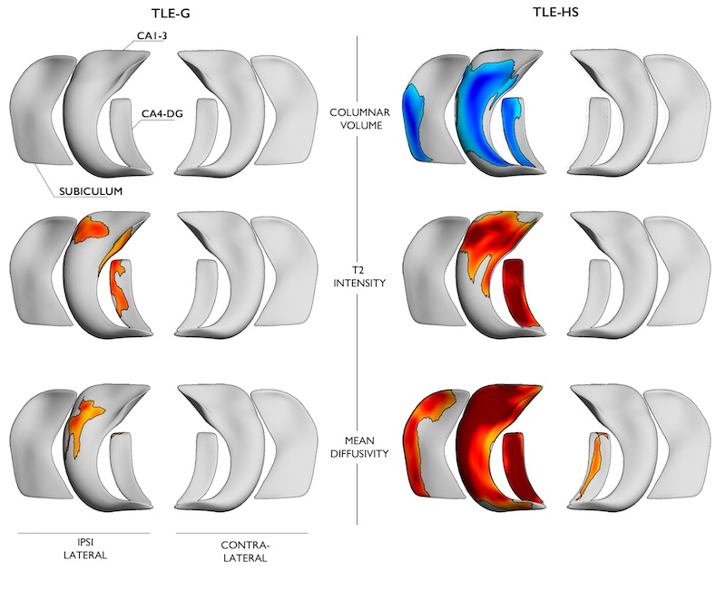
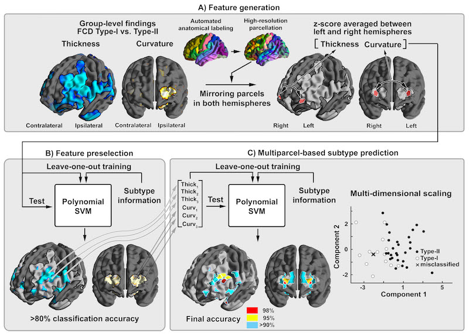
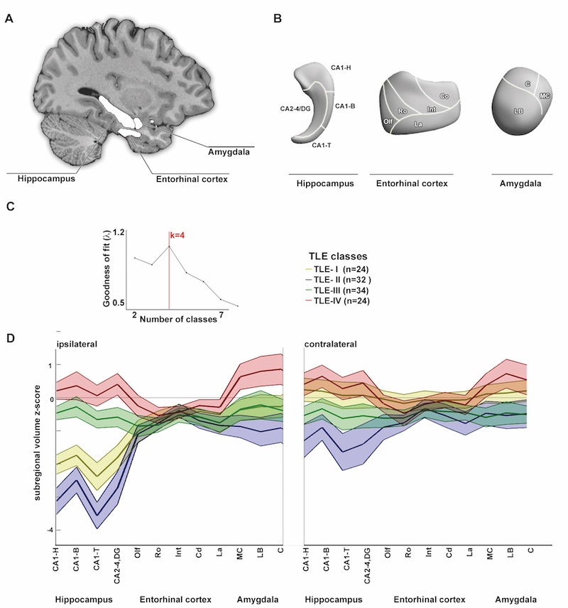
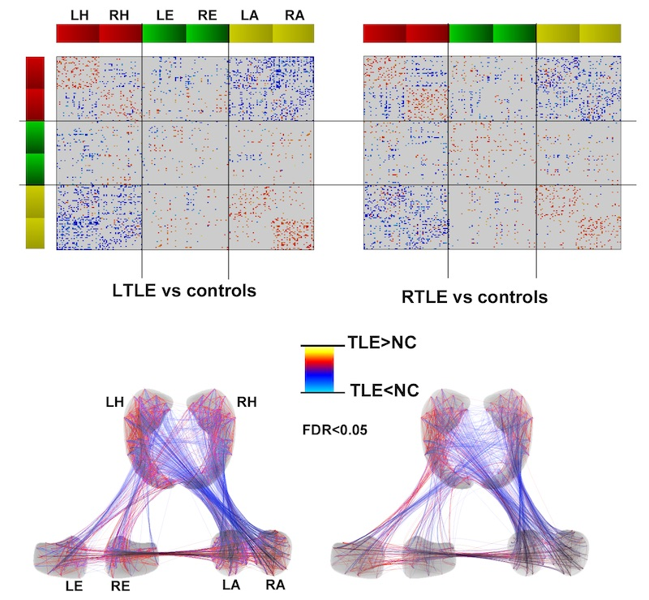
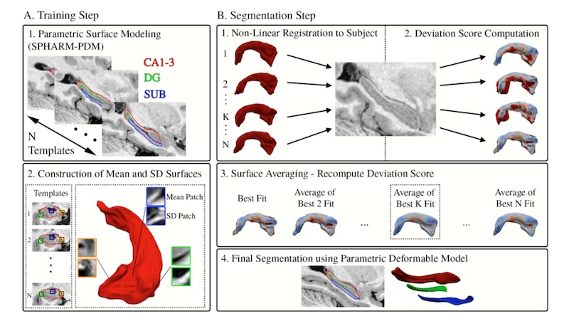
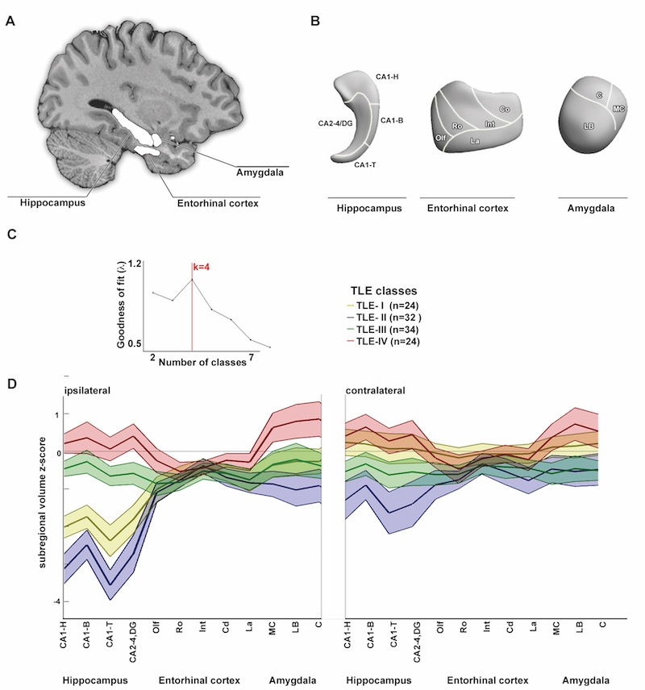

RESEARCH
Human epileptogenesis is a complex process, and its anatomical and functional basis is poorly understood.
We believe that MRI techniques advance our understanding of the basic mechanisms of epilepsy.
We have pioneered a series of novel computer-based methods to improve the detection of subtle epileptogenic lesions
that are not visible on conventional MRI.
Particular emphasis is placed on temporal lobe epilepsy, epilepsy related to malformations of cortical development and
idiopathic generalized epilepsy.
To assess brain pathology in various forms of epilepsy, we apply several advanced image acquisition
techniques such as high-field structural imaging, diffusion tensor imaging, functional MRI, and T2-relaxometry.
We also apply surface-based morphometry, texture analysis, volumetry, shape analysis, and morphometric
correlation and network analysis.
We have the following main areas of research:
MODELING AND AUTOMATED DETECTION OF EPILEPTOGENIC LESIONS

Multi-parameter MRI descriptors of focal cortical dysplasia, the most frequent cause of drug-resistant
neocortical epilepsy. These techniques predict histopathological subtypes in the living brain and can assist preoperative
decision making.
(Hong et al. 2015, MICCAI)

In-vivo models of hipppcampal scerosis, the hallmark lesion of temporal lobe epilepsy (TLE).
Multi-modal analysis of submillimetric MRI data allows to accurately describe the histopathological spectrum of TLE,
the most common drug-resistant epilepsy in adults.
(Bernhardt et al. 2016, Annals of Neurology)
MRI PREDICTORS OF CLINICAL OUTCOME

Applying pattern learning to preoperative whole-brain cortical thickness data
predicts surgical outcome in individual patients with drug-resistant frontal lobe epilepsy
(Hong et al. 2015, Neurology)

Surface-pattern learning for highly accurate outcome prediction of long-term seizure outcome in
unilateral TLE patients.
(Bernhardt et al. 2015, Annals of Neurology)
WHOLE-BRAIN MODELS OF PATHOLOGY

Whole-brain morphometric models reveal divergent patterns of cortical thickness and folding anomalies
in patients with focal cortical dysplasia type IIB and IIA. Shown are individualized prevalence maps.
(Hong et al. 2015, Neurology)

Multi-parameter models of superficial white matter diffusion MRI changes lend novel markers of
limbic pathophysiology and connectional anomalies in temporal lobe epilepsy (only left TLE shown here).
(Liu et al. 2016, Brain)
NETWORK ANALYSIS

Mesiotemporal structural covariance analysis in temporal lobe epilepsy, providing evidence
for subregional network anomalies in the core substrate of the disorder.
(Bernhardt et al. 2015, Cerebral Cortex)

Whole-brain structural covariance analysis in temporal lobe epilepsy, formally indicating the
system-level involvement of the disease.
(Bernhardt et al. 2011, Cerebral Cortex)
AUTOMATED TISSUE SEGMENTATION

Automated segmentation of hippcampal subfields from high-resolution MRI data.
(Caldairou et al. 2016, MICCAI)
Multi-parameter MRI descriptors of focal cortical dysplasia, the most frequent cause of drug-resistant
neocortical epilepsy. These techniques predict histopathological subtypes in the living brain and can assist preoperative
decision making.
(Hong et al. 2015, MICCAI)
In-vivo models of hipppcampal scerosis, the hallmark lesion of temporal lobe epilepsy (TLE). Multi-modal analysis of submillimetric MRI data allows to accurately describe the histopathological spectrum of TLE, the most common drug-resistant epilepsy in adults. (Bernhardt et al. 2016, Annals of Neurology)
Applying pattern learning to preoperative whole-brain cortical thickness data predicts surgical outcome in individual patients with drug-resistant frontal lobe epilepsy (Hong et al. 2015, Neurology)
Surface-pattern learning for highly accurate outcome prediction of long-term seizure outcome in unilateral TLE patients. (Bernhardt et al. 2015, Annals of Neurology)
Whole-brain morphometric models reveal divergent patterns of cortical thickness and folding anomalies in patients with focal cortical dysplasia type IIB and IIA. Shown are individualized prevalence maps. (Hong et al. 2015, Neurology)
Multi-parameter models of superficial white matter diffusion MRI changes lend novel markers of limbic pathophysiology and connectional anomalies in temporal lobe epilepsy (only left TLE shown here). (Liu et al. 2016, Brain)
Mesiotemporal structural covariance analysis in temporal lobe epilepsy, providing evidence
for subregional network anomalies in the core substrate of the disorder.
(Bernhardt et al. 2015, Cerebral Cortex)
Whole-brain structural covariance analysis in temporal lobe epilepsy, formally indicating the
system-level involvement of the disease.
(Bernhardt et al. 2011, Cerebral Cortex)
Automated segmentation of hippcampal subfields from high-resolution MRI data.
(Caldairou et al. 2016, MICCAI)